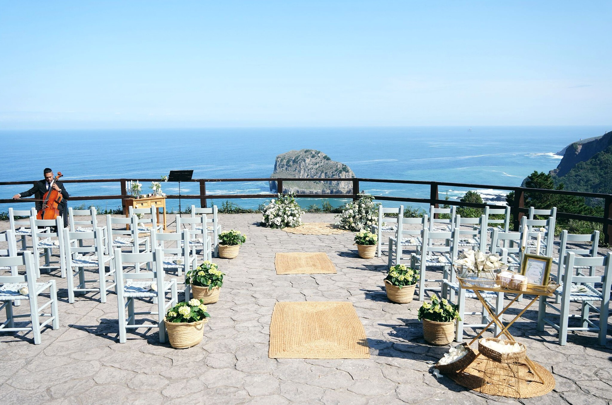
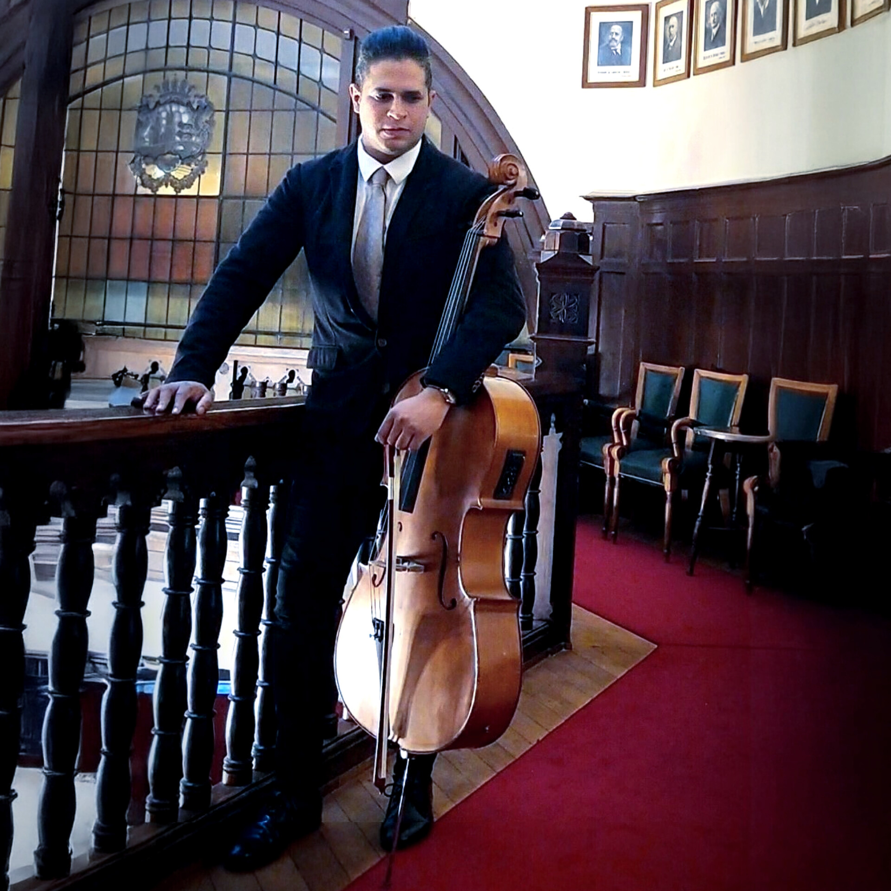
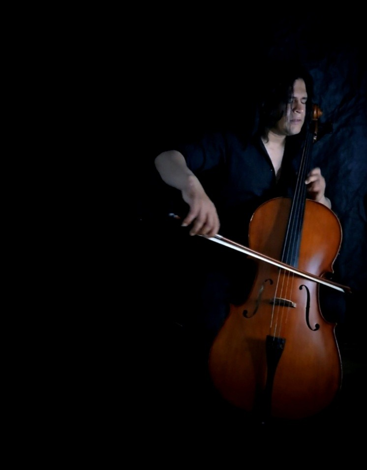
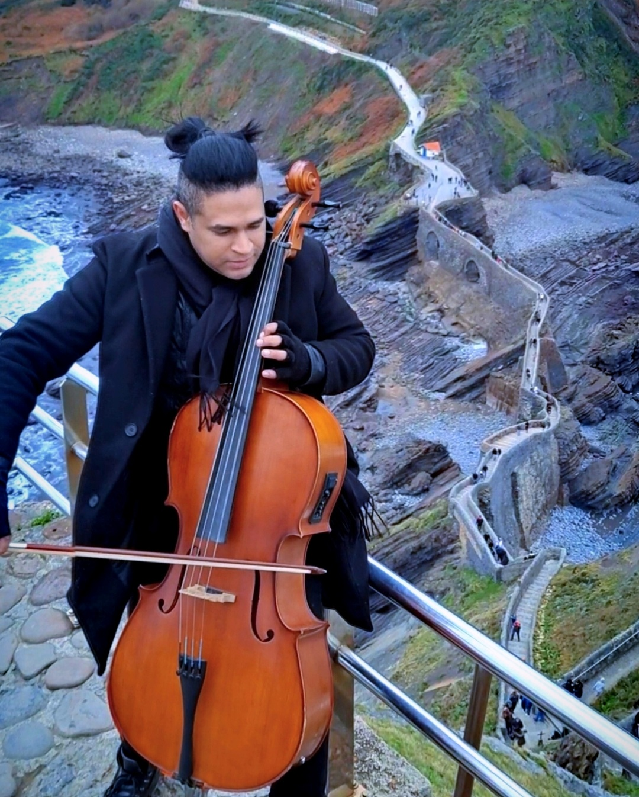
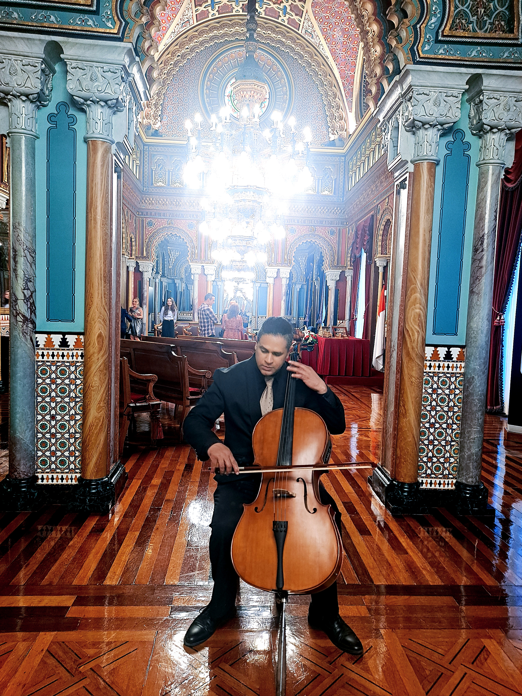

Violoncello en vivo
Interpretación instrumental para ceremonias, entradas, momentos especiales, cócteles, recepciones y celebraciones privadas.
Música en vivo para momentos especiales
Una propuesta musical elegante y cercana para ceremonias, bodas, aniversarios, eventos privados y celebraciones especiales.

Sobre mí
Yoan Darz es violonchelista profesional, tenor y director coral con formación académica en Venezuela y trayectoria artística en España. Su propuesta fusiona la elegancia clásica del violonchelo con repertorios populares, creando música en vivo para ceremonias, bodas, eventos privados y celebraciones especiales.
Formado en la Escuela Nacional de Música Juan Manuel Olivares y en la Escuela Superior de Música José Ángel Lamas, Yoan Darz cuenta con una amplia trayectoria como violonchelista, tenor, director coral y docente musical.
En Venezuela desarrolló una sólida carrera dentro del Sistema Nacional de Coros y Orquestas Juveniles e Infantiles, donde ejerció como profesor de violonchelo, canto, teoría y solfeo. También fue director del Instituto Cantoría del Orinoco, del Coro Cantoría del Orinoco, de los Niños Cantores del Orinoco y del Coro Sinfónico de Tucupita, además de dirigir agrupaciones orquestales infantiles y participar como director invitado en la Orquesta Sinfónica de Tucupita.
Como tenor, ha formado parte de la Sociedad Coral de Bilbao y fue solista y jefe de cuerda en el Orfeón Universitario de la Universidad Central de Venezuela, declarado Patrimonio Artístico de la Nación. También integró el Coro Sinfónico de Caracas y diversas agrupaciones corales profesionales.
Como instrumentista, ha sido miembro de varias orquestas sinfónicas venezolanas, entre ellas las orquestas de Tucupita, Vargas, Miranda y José Ángel Lamas.
Desde su llegada a Bilbao, participa como violonchelista en eventos empresariales y privados, incluyendo ceremonias, bodas, aniversarios, cumpleaños y celebraciones en espacios exclusivos. Actualmente compagina su actividad artística con la docencia musical, adaptando su repertorio a distintos formatos de evento en el País Vasco y otras regiones de España.
Servicios musicales
Interpretación instrumental para ceremonias, entradas, momentos especiales, cócteles, recepciones y celebraciones privadas.
Interpretación vocal para momentos especiales, con repertorio pop, balada, canción romántica y opción de repertorio lírico cuando el evento lo requiere.
Selección musical adaptada al tipo de evento: clásico, pop, bandas sonoras, boleros, bachata, salsa, música venezolana y otras propuestas.
Música para ceremonias civiles, religiosas o simbólicas, con piezas seleccionadas para entradas, lecturas, firmas, salidas y momentos íntimos.
Música para aniversarios, cumpleaños, pedidas de mano, cenas especiales y celebraciones familiares o personales.
Propuestas musicales para recepciones, actos institucionales, eventos de empresa, inauguraciones y encuentros profesionales.
Repertorio
El repertorio puede adaptarse según el tipo de evento. Para solicitudes especiales o piezas fuera de esta lista, consulta las condiciones de contratación.
Vídeos
Galería





Condiciones
Al solicitar el servicio, el cliente reconoce y acepta estas condiciones.
Contacto
Completa el formulario de solicitud y recibirás la respuesta por correo electrónico.
Estoy a tu disposición para consultas, reservas o información adicional.
Y, si lo deseas, acompaña mi recorrido musical y descubre nuevas experiencias siguiéndome en redes sociales.